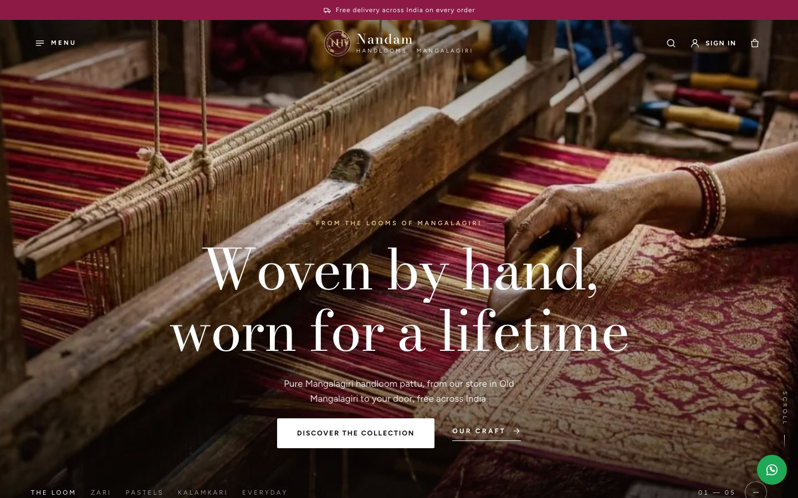
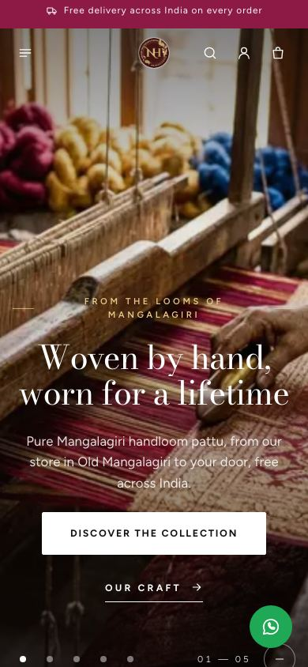
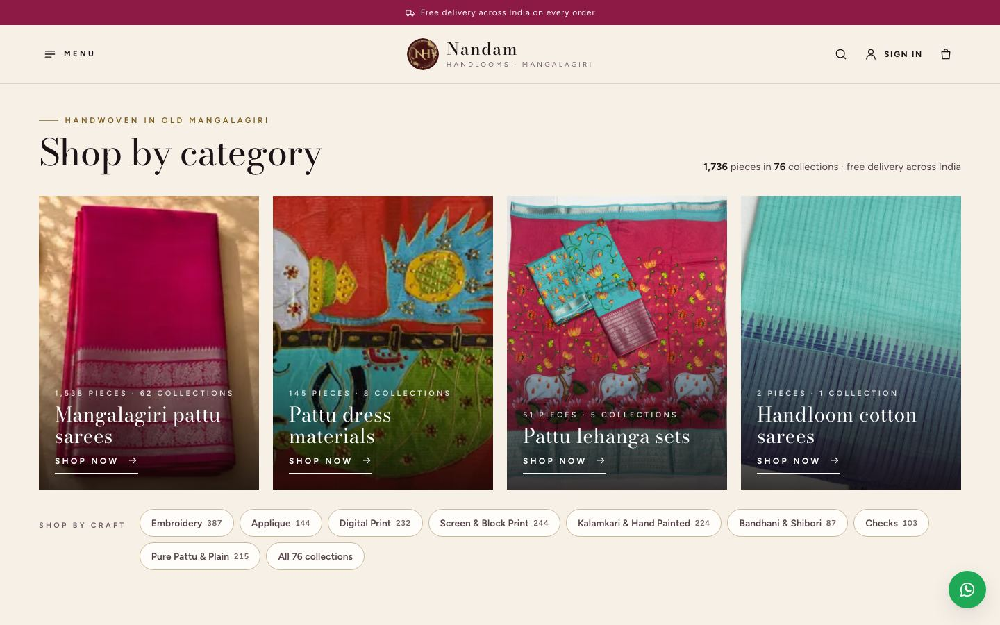
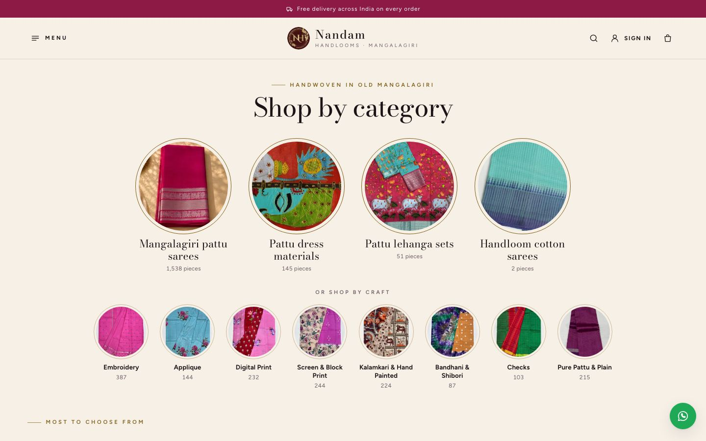
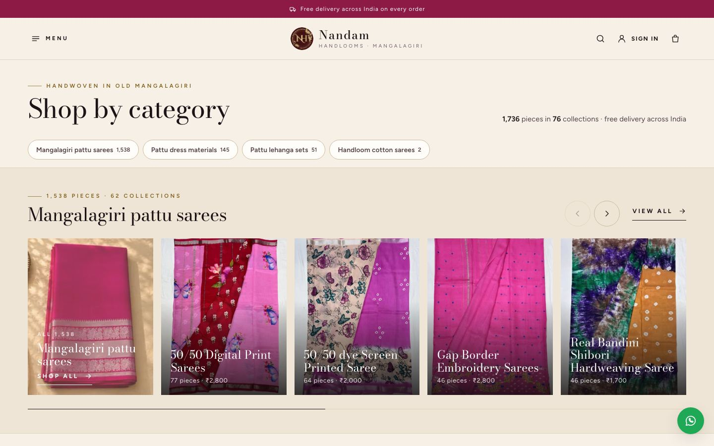

Categories first, no carousel
The client asked to take away the big sliding photos at the top of the home page and show the categories straight away. This mock-up shows the home page that way, in three layouts to choose from. It is built from the live website itself: the same look, the same header, footer and menu, and the real categories, collections and photos (live on ).
Before: the live home page today


After: pick one layout for the top
In every layout the header stays solid (there is no photo behind it any more), and everything below the new top part is today's home page. The "Woven for every occasion" block of four tiles is not needed any more: the new top part does its job.
AFour category tiles

Mangalagiri pattu sarees, Pattu dress materials, Pattu lehanga sets and Handloom cotton sarees as four tall photos, each with its pieces and collections. Under them, the crafts (Embroidery, Applique…) as quick links. On a phone: two by two, all four on the first screen.
Recommended: exactly what the client asked, calm and premium, and everything fits on the first screen.
Open ABRound photos + largest collections

The four categories as big round photos, the eight crafts as smaller ones, then the eight collections with the most pieces. Familiar from large Indian clothing websites; more choices on the first screen.
Open BCEach category with its collections

Each category gets a band: its name and counts, then a sliding row of its biggest collections. Shows the most at once, but the page gets longer before the rest of the home page.
Open CYour choices
| Choice | A | B | C |
|---|---|---|---|
| 1. Top of the home page | Four category tiles Recommended | Round photos + largest collections | Each category with its collections |
| 2. The logo entrance (the logo animation on the first visit, about 3 seconds) | Removed: the categories show at once Recommended | Kept as today | |
| 3. Right after the categories | As today: our story, then New this week Recommended | New this week first, then our story |
Switch them with the Design options button (bottom left) on any page, then press Copy my choices and send the text. Light and dark mode and motion are there too.
Real, from the live website
- The header, the top bar, the footer, the menu and every section under the new top part are copies of the live home page.
- The categories, their pieces and collections, the crafts and the collection photos are the live data.
- The shop's number shows as the new +91 73823 88565 (calls and WhatsApp). That change is ready but not live yet.
For the shop to fix (photos)
- Category photos are not usable at the top: the pattu sarees one is a poster full of text; dress materials and lehanga sets are tiny (400 × 225). The mock-up uses the website's own photos and a lehanga collection photo instead. New category photos (upright, at least 900 × 1200) would look best.
- "Kalamkari Lehanga Sets": its collection photo is a laptop keyboard.
- "Plain Cotton Saree": its photo looks like a printed pattu saree. Please check.
- Handloom cotton sarees has only 2 pieces today, yet gets a full tile. Keep it, or hide the category until there is more stock: your call.
Mock-up only
- Links don't leave the page: a small message says where they would go (those pages don't change). The menu, the theme switch in the footer and the sliding rows work.
- States to try (Design options → Screen states): normal, loading, couldn't load.
- Nothing in the website's code has been changed. After your choices, the chosen layout is built into the real home page.